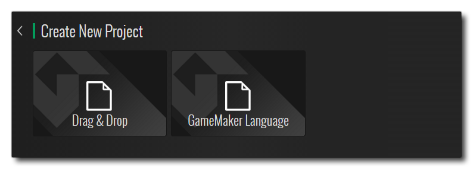
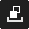

La primera vez que abra GameMaker Studio 2, se le pedirá que inicie sesión en su cuenta YoYo (o se registre para una si aún no lo ha hecho - vea aquí ). Una vez registrado e iniciado sesión, se abrirá el GameMaker Studio 2 IDE principal en la página de inicio: 
En la parte superior, puede encontrar los menús IDE generales que se explican en las siguientes secciones del manual:
Tenga en cuenta que también aparecerán opciones de menú específicas del contexto en la barra de menú superior, dependiendo de la ventana en la que se haya enfocado actualmente. Por ejemplo, si tiene la ventana del árbol de recursos en foco, entonces tendrá un elemento de menú adicional aquí para " Recursos ". El resto de la Página de inicio se explica en las siguientes secciones:
Al navegar por las diferentes secciones de la Página de inicio, al hacer clic
en esto simplemente lo llevará de vuelta a la página principal.
A la izquierda de la página de inicio, puede ver una lista de proyectos anteriores que puede abrir. Si pasa el mouse sobre ellos, puede ver el nombre completo del proyecto y la ruta, y hacer clic
La barra superior de la Página de inicio contiene una serie de enlaces para facilitar la navegación. Se enumeran a continuación:
- Mi cuenta: inicie sesión en su cuenta YoYo (consulte aquí para obtener más detalles)
- YoYo Games: lo lleva al sitio web principal de YoYo Games
- Iconos de redes sociales: estos lo llevan a los diversos sitios de medios sociales de YoYo Games donde puede mantenerse al día con las noticias sobre GameMaker Studio 2
La sección Proyectos es donde puedes crear, abrir o importar proyectos. Puede hacer clic en Nuevo para crear un nuevo proyecto, Abrir para abrir un proyecto existente o Importar para abrir un GameMaker: Studio 1.4 GMX archivo de proyecto o para abrir un archivo comprimido YYZ Archivo del proyecto GameMaker Studio 2. Tanto Open como Import abrirán el explorador de archivos para que pueda navegar al archivo de proyecto que necesita.
NOTA: GameMaker Studio 2 no es completamente compatible con versiones anteriores de GameMaker: los proyectos de Studio 1.4 pero los proyectos importados de 1.4 aún deberían ejecutarse, ya que se ha recreado la funcionalidad obsoleta para que usted automáticamente use scripts de compatibilidad. Para obtener detalles completos de los posibles problemas y los cambios realizados en GML, consulte el artículo del Centro de ayuda Porting A GMS 1.4 Project para GameMaker Studio 2, así como la sección del manual sobre Obsolete Functions.Para crear un nuevo proyecto, simplemente haga clic en el botón denominado Nuevo para ir a la siguiente pantalla: 
GameMaker Studio 2 permite especificar qué tipo de proyecto es el que desea crear, y puede elegir según sus conocimientos o hábitos de codificación. Las opciones disponibles son:
- Nuevo proyecto de arrastrar y soltar: Esto creará un nuevo proyecto en el que el Editor de objetos (y cualquier otro editor que permita el código) se configurará para usar la interfaz de arrastrar y soltar de GameMaker Studio 2. Para obtener más información sobre Arrastrar y soltar (DnD™), consulte aquí. Tenga en cuenta que esta no es una interfaz DnD™ exclusiva, y puede cambiar entre DnD™ y el código GML con el botón derecho del mouse.
.
- Nuevo proyecto de lenguaje de GameMaker: Esto creará un proyecto donde la programación predeterminada se realiza usando el lenguaje GameMaker (GML). Puede encontrar más información sobre GML aquí. Tenga en cuenta que esta no es una interfaz GML exclusiva, y puede cambiar entre el código GML y DnD™ con el botón derecho del mouse.
Independientemente de lo que seleccione, se le pedirá que elija una ubicación para guardar el proyecto y luego se abrirá en GameMaker Studio 2.
La sección de información de la Página de inicio le permite navegar en YoYo Games Marketplace, así como explorar y abrir Tutoriales y Demos realizados por el equipo de YoYo Games para mostrar aspectos específicos de GameMaker Studio 2 (consulte más información a continuación).
Tutoriales y Demos
Al hacer clic en los botones Tutoriales o Demos, accederá a una pantalla que muestra los tutoriales / demostraciones que posee y los tutoriales / demos oficiales que están disponibles para descargar: 
Para descargar cualquiera de los tutoriales o demos oficiales, simplemente haga clic en el ícono del que desea pasar y se agregará a su sección " Propietario " en la parte superior (tenga en cuenta que es posible que deba ingresar al Mercado antes de este puede hacerse). Una vez que el tutorial o la demostración se encuentran en la sección "Propietario", puede pasar el mouse sobre él e instalarlo o ver la información en él desde el Marketplace: 
Una vez que se ha instalado un tutorial o una demostración, es simplemente un caso de hacer clic en él para abrirlo y se le pedirá que proporcione una ubicación para guardar el proyecto de tutorial antes de que se abra el IDE para que pueda comenzar. Tenga en cuenta que los tutoriales instalados y demos tendrán un ícono adicional  que se puede usar para desinstalar el proyecto de su computadora (esto no elimina el tutorial o la demostración de su lista de "Propietario").
que se puede usar para desinstalar el proyecto de su computadora (esto no elimina el tutorial o la demostración de su lista de "Propietario").
Las secciones de tutoriales / demostraciones de la página de inicio también tienen un par de botones para ayudarlo a usar y navegar mejor sus activos:
| Al hacer clic en esto, se actualizará la lista de proyectos del Mercado para que pueda verificar si algo se ha actualizado y obtener las últimas versiones. | |
|  | Al hacer clic en este botón se alternará la vista entre los tutoriales o demos que posee y los que ha instalado. |
Tenga en cuenta que mientras trabaja en un tutorial puede guardar el proyecto en cualquier momento y cerrar el IDE o incluso cambiar proyectos sin preocuparse por perder su lugar, ya que los tutoriales almacenan la página y la sección en la que está trabajando cada vez que guarda el proyecto.
También vale la pena señalar que también puedes encontrar tutoriales y demostraciones de terceros del Marketplace, y una vez que estos hayan sido comprados y agregados a tu cuenta, también aparecerán en la sección "Propiedad" de la página correspondiente.